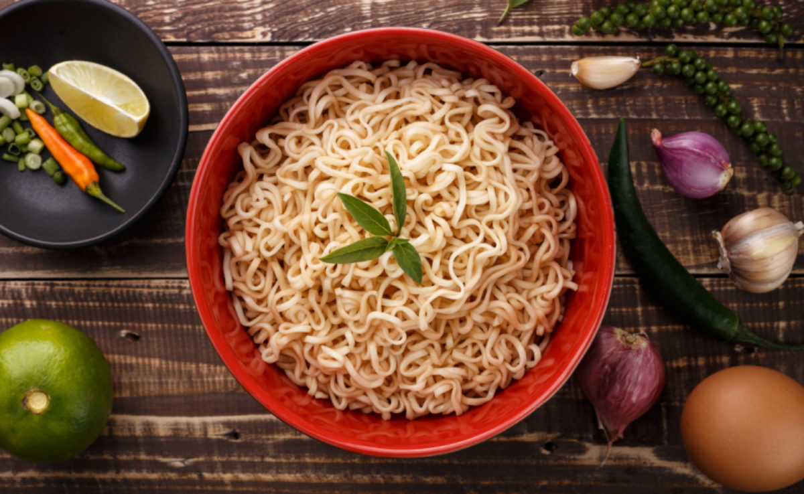

Miojo cremoso é uma deliciosa e fácil opção para uma refeição rápida e saborosa. Com poucos ingredientes, é possível transformar um pacote de miojo em um prato com um sabor cremoso e agradável ao paladar. Para preparar o miojo cremoso, basta cozinhar o macarrão de acordo com as instruções da embalagem e, em seguida, adicionar um molho cremoso feito com queijo, creme de leite e temperos a gosto. É possível adicionar também alguns legumes picados para dar mais sabor e nutrientes à refeição. O resultado é um prato quente e cremoso que agrada a todos, desde crianças até adultos com pouco tempo para cozinhar. Além disso, é uma opção muito versátil, já que é possível variar os ingredientes e temperos para criar diferentes sabores e texturas. Em resumo, o miojo cremoso é uma opção deliciosa e prática para quem quer uma refeição saborosa em poucos minutos. Experimente em casa e surpreenda-se com o resultado!
| Sabor | Nota | Preço |
|---|---|---|
| Miojo de Tomate | ⭐ | R$ 1,99 |
| Miojo de Galinha Caipira | ⭐⭐⭐ | R$ 1,89 |
| Miojo de Legumes | 💩 | R$ 1,89 |
| Miojo de Costela Barbecue | ⭐⭐⭐⭐⭐ | R$ 2,30 |
| Preço médio | R$ 2,02 | |